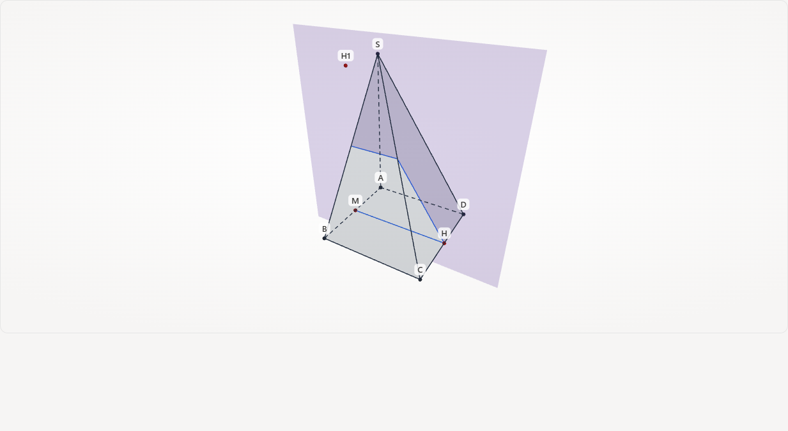
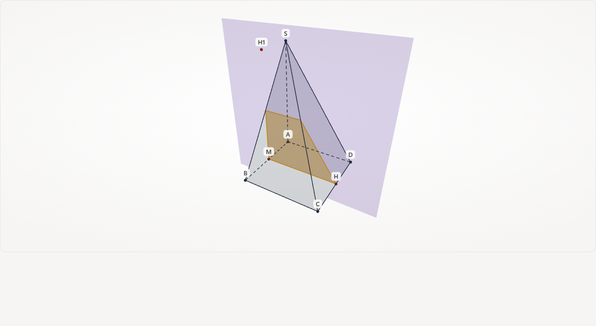

Bước 9/13 · trace 10 Trên mặt ABCD, nối giao điểm thuộc cạnh AB với giao điểm thuộc cạnh CD.Bước 10/13 · trace 11 Trên mặt SCD, nối giao điểm thuộc cạnh CD với giao điểm thuộc cạnh SC.

Bước 11/13 · trace 12 Trên mặt SBC, nối giao điểm thuộc cạnh SC với giao điểm thuộc cạnh SB.Bước 12/13 · trace 13 Trên mặt SAB, nối giao điểm thuộc cạnh SB với giao điểm thuộc cạnh AB.

Bước 13/13 · trace 14–15 Thiết diện khép lại thành tứ giác: (P) cắt hình chóp S.ABCD. · Diện tích thiết diện bằng 9/4.